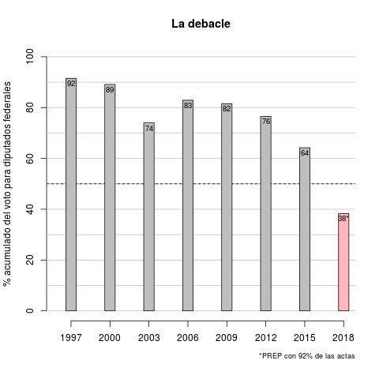
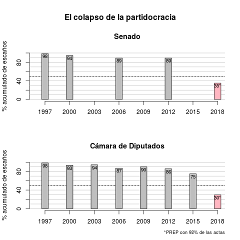

Ni en Venezuela ni en el Brasil de Lula: el 2 de julio amanecimos en algo más parecido a Ecuador
Los partidos son fundamentales para el buen funcionamiento de las democracias. Amalgaman intereses sociales. En su interior, estructuran el intercambio entre facciones, formando coaliciones duraderas. Hacia afuera, hacen coaliciones, más efímeras, para la competencia electoral y para hacer política pública. Esto suele redundar en mejores condiciones para que el ciudadano incida en la cosa pública.
Un sistema de partidos robusto dota al proceso democrático de una buena dosis de estabilidad y predictibilidad. Esto puede apreciarse en el continente americano, cuyos partidos varían mucho. Los países andinos, y entre ellos Ecuador particularmente, han sido célebres por la debilidad endémica de sus sistemas de partidos. En su monografía sobre los sistemas de partidos de Latinoamérica, Mainwaring y Scully se refieren al ecuatoriano como "rudimentario", caracterizado por el multipartidismo, la ausencia de vínculos sólidos con el electorado y su permanente mutabilidad.1 En contraste, los autores ubicaron al mexicano entre los sistemas de partidos más "institucionalizados". Atribuyen nuestro relativo éxito para cambiar el modelo económico a esta diferencia.
Elección tras elección, los partidos que formaron el triumvirato triunvirato medular de dicho sistema — el PAN, el PRI y el PRD — captaron el grueso del voto y ganaron la parte sustancial de cargos de elección en disputa. El predominio fue tal que les permitió definir y modificar las reglas fundamentales del sistema en aras de perpeturar su control del mismo. Su voracidad incluso les valió el mote de "partidocracia".
Pero nada dura por siempre. Quizás por apostarle tanto a las barreras de entrada artificiales como estrategia de subsistencia, los tres partidos fueron erosionando su conexión con el electorado mexicano. Como se aprecia en el diagrama 1, que reporta el porcentaje de votos para la cámara baja que ganaron conjuntamente el PAN, el PRI y el PRD en elecciones federales, el cambio fue paulatino pero constante. Con la excepción de 2006, siempre consiguieron una porción del voto inferior que la del ciclo anterior. Conjuntamente captaron nueve de cada diez votos en 1997. Para 2015 no superaron los dos tercios. Y en 2018 a penas rebasaron el tercio del total de votos para la cámara. Una caída dramática.

Figura 1: Votos ganados por los tres principales partidos en elecciones federales de diputados 1997–2018
Entonces, entre las víctimas de lo que el diario Reforma llamó a ocho columnas jonrón con casa llena de AMLO el 1o de julio hay que poner, en primer plano, al sistema de partidos tal cual lo conocemos desde 1988. El domingo pasado puso fin a los cambios incrementales y presenciamos una genuina ruptura. Esto lo retrata con elocuencia el diagrama 2, que reporta el porcentaje de senadores y diputados federales de los tres principales. Todavía en 2009 obtuvieron nueve de cada diez diputaciones; en 2018 no alcanzarán ni tres de cada diez.2
Somos testigos del fin de la partidocracia. La mayoría de la LXIVa legislatura, en ambas cámaras del Congreso, la controlarán dos partidos nuevos — Morena y el PES — junto con el otrora marginal PT. No es descabellado imaginar que, enfrascados en luchas intestinas, ni el PAN ni el PRI pudiesen resurgir de sus cenizas. Y nuevos partidos podrían entrar en la escena. El sistema de partidos que nos trajo la democracia ha caído, exhausto.

Figura 2: Escaños de los tres principales partidos en el Congreso 1997–2018
Sistemas de partidos históricamente robustos, como el británico o el estadunidense, han sufrido en el pasado cambios tan drásticos como el que estamos atestiguando. Tras la crisis, nuevos sistemas de partido terminaron cristalizándose. Pero la experiencia latinoamericana está repleta de fracasos democráticos atribuibles, por lo menos en parte, a la ausencia de un sistema de partidos fuerte. Ya veremos dónde termina el episodio que se acaba de abrir en nuestra joven democracia.
Scott Mainwaring y Timothy R. Scully (coords.). 1995. Building Democratic Institutions: Party Systems in Latin America. Lalo Alto, CA: Stanford University Press.
La estimación del reparto de escaños en 2018 es de Javier Márquez (@JMarquezP), con base en el PREP.